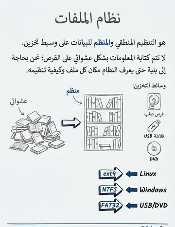
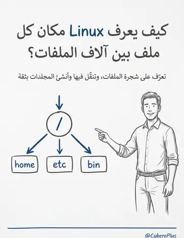
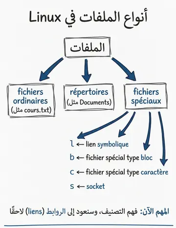
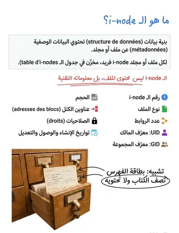
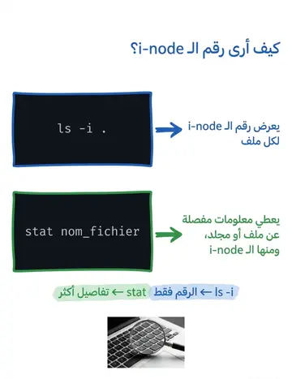
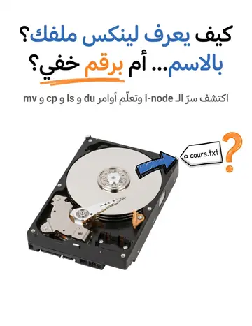
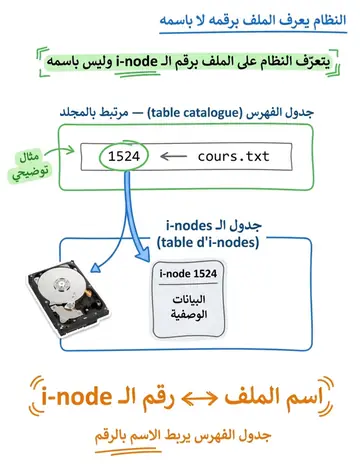
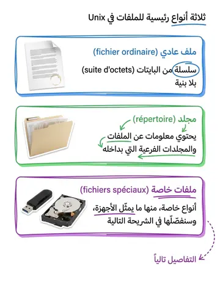
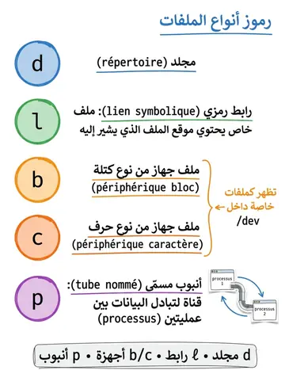

Inodes, types & données des fichiers
عقد الفهرس وأنواع الملفات وبياناتها
الشرح بالعربية
الملف في Unix = بيانات + i-node: بنية تخزن الميتاداتا (النوع، الأذونات، المالك، المجموعة، الحجم، التواريخ، ومؤشرات الكتل) ورقمًا فريدًا. اسم الملف مجرد مدخل في جدول يربط الاسم بالـ inode، لذلك يمكن عدة أسماء لنفس inode. الأنواع: ملف عادي (-)، مجلد (d)، رابط (l)، إضافة إلى أنواع خاصة. لا تُحذف البيانات فعليًا إلا عند حذف آخر رابط.
Illustrations de la leçon
9 planches · cliquez pour agrandir








Contenu du cours
Pages 115–119 · texte intégral du support
Les fichiers ordinaires (réguliers) sont une suite d'octets sans structure.
Les répertoires (d) contiennent des informations sur les fichiers et les sous-répertoires.
Les liens symboliques (l) sont une catégorie particulière de fichiers (qui contiennent l'emplacement du fichier à prendre en compte).
Les fichiers périphériques (c-b) sont vus comme des fichiers spéciaux du répertoire /dev.
Les tubes nommés (p) sont des fichiers sur disque gérés comme un tube
(pipe) entre deux processus échangeant des données.
LES TYPES DE FICHIERS DANS UNIX
Un i-node est une structure de données qui contient des métadonnées à propos d'un fichier ou d'un répertoire.
Chaque fichier (ou répertoire) dans le système de fichiers possède un i-node unique qui est stocké dans la table d’i-nodes.
NOTION D’I-NODE
ls -i : Commande qui permet d'afficher le numéro d’i-node de chaque fichier.
stat : Commande qui donne des informations détaillées sur un fichier ou un répertoire, y compris le numéro d’i-node.
Les inodes stockent des métadonnées telles que :
Numéro d’i-node : Identifiant unique pour chaque fichier.
Le type du fichier (ordinaire, répertoire, spécial...).
Le nombre de liens.
UID (User Identification): numéro d'utilisateur du propriétaire.
GID (Group Identification) : numéro du groupe propriétaire
Taille du fichier en octets
Adresses des blocs de données (qui contiennent le fichier)
Droits du fichier
Date de création, du dernier accès et de la dernière modification.
STRUCTURE D’UN I-NODE
TABLE D’I-NODE
Chaque fichier est référencé dans deux
tables :
Une table d'inodes, une table par système de fichiers
:
cette table regroupe tous les inodes fichiers, qui sont regroupés l'un après l'autre. A chaque inode, correspond un numéro d’inode.
Une table catalogue
(une par répertoire)
:
cette table décrit les correspondances entre les noms de fichiers et les numéros d'inodes.
Le système identifie un fichier non pas par son nom, mais par son numéro d’inode.
LES DONNÉES D’UN FICHIER
Dans Unix, les fichiers sont représentés comme des séquences d’octets, mais différents aspects de
gestion de données sont importants :
Bloc de données :
Les fichiers sont divisés en blocs de données stockés sur le disque. L’i-node contient des pointeurs vers ces blocs.
Le nombre de blocs peut varier selon la taille du fichier.
Données utilisateur :
Les données réelles contenues dans le fichier, qu’il s’agisse de texte, de scripts, ou de binaire.
Métadonnées :
Les métadonnées d’un fichier sont stockées dans l’i-node (propriétaire, permissions, etc.).
Cache disque :
Le système Unix utilise un mécanisme de mise en cache pour accélérer l’accès aux fichiers en stockant temporairement les blocs en mémoire vive.